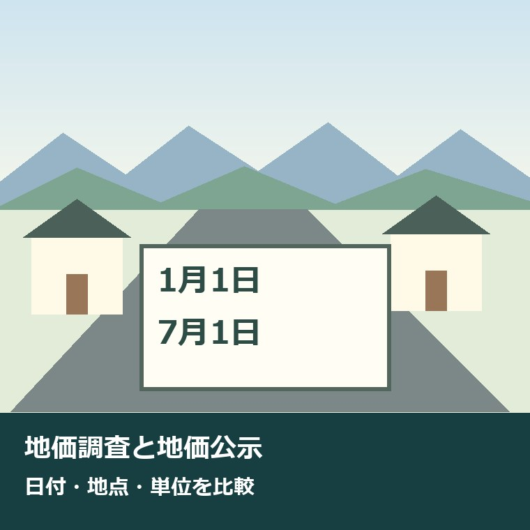
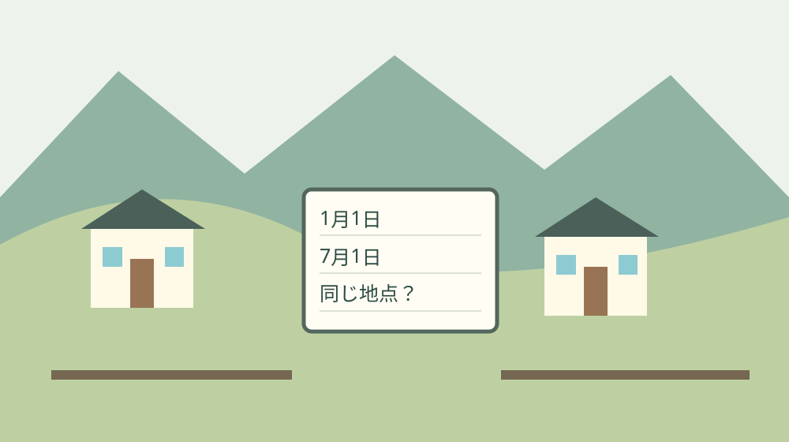
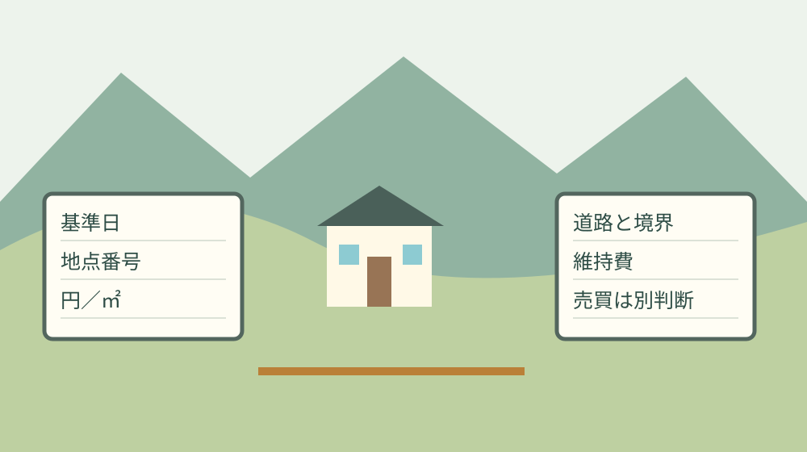

地価調査と地価公示の違い｜森町の立地比較

森町の土地を持ち続ける負担から、価格資料を読む
森町の土地を維持している人は、価格が公表される日だけ土地に向き合っているわけではありません。草木の手入れ、道路からの出入り、家族の連絡、建物があれば修繕の段取りもあります。土地を守ってきた時間と負担を認めたうえで、秋に出た数字をどう使うかを考えます。
この記事は、2026年9月に公表された地価調査と、1月を基準とする地価公示を比べたい人に向けたものです。値上がり・値下がりという結論を急ぐ前に、日付と地点の違いを整理します。森町の土地を持つ人にも、購入を検討する人にも使える、比較の出発点です。
私は大石浩之（磐田市／不動産業）です。価格の数字には説得力がありますが、比較の条件がずれていると、家族の判断までずれます。私なら、手元の資料へ基準日を書き込むところから始めます。今日決めるのは売却価格ではなく、どの数字を見て話しているかです。
森町の2026年地価公示3地点については、実家売却前に見る公示価格の3地点でも整理しています。本記事はその価格表をもう一度紹介することより、秋の地価調査と同列に置くときの違いを扱います。
地価調査は7月1日、地価公示は1月1日
静岡県の『地価調査・地価公示とは』によると、地価調査の調査基準日は7月1日、地価公示は1月1日です。地価調査は都道府県知事、地価公示は国土交通省土地鑑定委員会が実施する仕組みです。どちらも土地の適正な価格を判断する際の客観的な目安として説明されています。
2026年の地価調査は、県の資料一覧が9月16日に更新され、統計センターしずおかにも同日更新の資料が掲載されています。統計センターの調査日は2026年7月1日です。公表された9月の価格と呼んでも、価格の基準となる日は9月16日ではありません。
地価公示も、公表の時期と基準日を区別します。県の制度解説は2026年の地価公示結果を3月18日掲載と案内していますが、比較に使う基準日は1月1日です。資料をダウンロードした日、記事で紹介した日、土地価格の基準日は、それぞれ別に記録します。
『春より秋の方が高い』と話すには、時点以外の条件をそろえる必要があります。両資料の価格を並べただけでは、同じ場所を比べたことにはなりません。私は、日付を先に書く習慣が、数字の見間違いだけでなく、家族間で違う資料を見て話す食い違いも減らすと考えます。
| 項目 | 地価調査 | 地価公示 |
|---|---|---|
| 基準日 | 7月1日 | 1月1日 |
| 実施主体 | 都道府県知事 | 国土交通省土地鑑定委員会 |
| 地点の呼称 | 基準地 | 標準地 |
| 宅地の単位 | 円／㎡ | 円／㎡ |

森町の2026年は、同じ3地点ではない
静岡県の令和8年地価調査基準地一覧では、森町の宅地として3地点が掲載されています。14ページの『森－1』は睦実字谷口2743番8で27,000円／㎡、『森－2』は谷中字権現623番16で25,800円／㎡、『森5－1』は森字十七夜前1003番6外で38,300円／㎡です。
地価公示の一覧12ページにある森町の3地点は別の所在地です。『静岡森－1』は森字中曽根1726番4で36,700円／㎡、『－2』は睦実字甚六屋敷2069番3で23,400円／㎡、『5－1』は森字横町351番1で26,900円／㎡。番号の末尾だけを合わせても同じ土地にはなりません。
意外な点は、両方とも3地点で、番号が似ていても、森町の今回の所在地は一致していないことです。睦実の地価調査27,000円と、公示23,400円を引き算しても、同じ土地が半年で3,600円上がったとは言えません。谷口と甚六屋敷という所在地の違いを先に確認します。
公示一覧の脚注では、県地価調査との共通地点を＊で示すと説明されています。今回確認した森町の3地点にはその表示がありません。県内のどこかに共通地点があることと、自分が比較する森町の行が共通地点であることは別です。所在地と注記を両方読みます。
両方の表には前年価格や変動率の欄もあります。地価調査の令和8年と令和7年の比較は、同じ調査の前年との比較です。1月の地価公示から7月の地価調査への変化を示す欄ではありません。見出しの『R7価格』『前年公示価格』を省かず、数字の隣に残します。
| 資料 | 所在地の識別 | 価格 |
|---|---|---|
| 地価調査 | 睦実字谷口2743番8 | 27,000 |
| 地価調査 | 谷中字権現623番16 | 25,800 |
| 地価調査 | 森字十七夜前1003番6外 | 38,300 |
| 地価公示 | 森字中曽根1726番4 | 36,700 |
| 地価公示 | 睦実字甚六屋敷2069番3 | 23,400 |
| 地価公示 | 森字横町351番1 | 26,900 |
1㎡当たりの数字を、土地全体の売値に飛ばさない
県の制度解説では、宅地と宅地見込地の価格単位は1平方メートル当たりです。一方で林地は10アール当たりとされています。同じ地価調査の資料一覧にある数字でも、宅地と林地を単位の確認なしに横に並べません。この記事の森町6地点は宅地の資料の円／㎡を使っています。
単位の感覚をつかむ計算例として、27,000円／㎡に仮の面積200㎡を掛けると540万円になります。計算式は27,000×200です。この200㎡は説明のために置いた面積で、掲載地点の面積でも、読者の土地の面積でもありません。計算の意味を確かめる例として扱います。
540万円という計算結果は、その面積の土地なら同額で売れるという査定ではありません。県が説明する価格は、建物等や使用・収益の権利がないものとした通常の取引価格です。現実の建物、道路条件、権利、整備の必要を含む個別の売買とは、確認する条件が違います。
私が数字を家族の負担へ翻訳するなら、想定価格の横へ、維持費と確認費用の欄を作ります。草木の手入れ、建物の修繕、現地へ通う交通費など、実際の支出を家族の記録から拾います。金額が不明なら空欄を埋めるために相場を作らず、確認先と担当者だけを書いておきます。
森町の立地比較では、用途と境界を別資料で見る
森町の都市計画図の案内は、1万分の1の用途地域図を公開し、土地利用や建築計画の法規制を確認する参考資料として使うよう説明しています。図は都市計画の概略を示すもので、詳細は町の建設課へ確認する案内です。価格資料に載ったことを、希望の建築ができる証拠にはしません。
森町の地籍調査の案内は、一筆ごとの所有者、地番、地目、境界、地積を調べ、地籍簿と地籍図を作る調査と説明しています。価格を調べる地価調査とは、名前が似ていても目的が違います。『地価』と『地籍』の資料を別の見出しで保管すると、探し直すときに迷いにくくなります。
町が交付する地籍調査の成果は、調査当時の測量成果です。調査後の分筆や合筆は反映されないため、法務局の地積測量図等で確認するよう町は案内しています。過去の図があることと、現況の境界・面積が確かめられたことを区別する必要があります。
立地を比べる際の移動や買い物、防災の条件は、森町の住所選びと生活圏の確認も参考になります。安い土地が暮らし全体でも負担が小さいとは限りません。これは特定地区への評価ではなく、価格以外に家族が確認する項目を残すための考え方です。
良い点｜価格の出発点を、同じ資料で共有できる
地価調査と地価公示の良い点は、基準日と地点を特定した価格資料が公開され、家族や相談先が同じ原本を確認できることです。私は、根拠の分からない『この辺はこのくらい』という話から一歩進める点を評価します。比較の土台が明示されると、質問する内容も具体的になります。
前年の数字も併記されているため、その資料が何を比較しているかを確かめられます。選定替えや共通地点の注記があれば、それも比較条件の一部です。私は、価格だけを切り抜くより、列の見出しと所在地を残した資料を家族へ渡す方が、説明のやり直しを減らせると考えます。
公的な目安を持つことは、不動産業者へ査定を頼む際にも質問の入口になります。『県のこの地点とは、道路や土地の形がどう違うのか』と聞けば、数字の差の理由を確認できます。公表価格をそのまま答えとして押し付けず、違いの説明を求めるために使う方法です。
土地を維持してきた人が資料を探し直す負担も、家族が一部を担えます。離れて暮らす家族が公式資料の該当ページを保存し、基準日と地点を書き添えるだけでも準備になります。現地に行く人だけへ調査と説明を集中させない、小さな役割分担として有効だと私は考えます。

注文したい点｜3地点の数字を、町全体の答えにしない
森町の掲載地点の価格だけでは、すべての地区や個別の土地の価値は判断できません。中心部に近い土地、駅から離れた土地、道路の条件が異なる土地には、それぞれ確認が残ります。地価調査と地価公示の違いを理解しても、その限界がなくなるわけではありません。
私は、町内の一つの数字を自宅の面積へ掛けて『うちの値段』と決める説明には賛成できません。計算が正しくても、採用した単価が個別の土地に合うかは別だからです。今日できる対案は、価格表の余白へ『対象地と違う条件』を一つ書き、査定や相談の質問に変えることです。
維持費の負担についても、価格資料からは答えが出ません。家族の誰が草刈りをしているか、修繕を先延ばしにしているか、遠方から何回通うかは、家族自身が把握する情報です。今日の資料整理では、金額の結論を出さず、領収書や作業記録の保管先を確認するだけでも進められます。
私は、どの資料が新しいかだけで優劣をつけることにも迷いがあります。新しい地価調査が、別地点の公示価格を置き換えるわけではありません。知りたいのが同じ地点の推移なのか、別の立地の比較なのかを先に決め、問いに合った資料を選ぶ必要があります。
対案・結論｜今日は資料の基準日を書き込む
地価調査と地価公示を比較するために今日行うことは、手元の資料へ基準日を書くことです。2026年地価調査なら2026年7月1日、2026年地価公示なら2026年1月1日と記します。保存日や公表日を消すのではなく、別の欄を作って区別します。
次に、地点番号と所在地を同じ行へ写します。番号が似ていても字名や地番が違えば、同じ地点として扱いません。今回の森町のように別地点なら、『地点比較』と書き、半年の変動率を計算する欄には進まない形にします。数字を計算する前の分類です。
価格の欄には円／㎡という単位を付けます。円と万円、面積の㎡と坪を混ぜず、換算する場合は計算式を残します。仮の面積を使った試算なら仮定と明記し、実際の登記面積や測量面積へ勝手に置き換えません。計算の根拠を残すことが、後で見直せる資料につながります。
相続税の路線価や倍率を見ている場合は、目的の違う評価として別の欄へ移します。森町の倍率方式と路線価の確認も参照できます。税額の個別判断をこの価格比較だけで済ませず、税務の窓口や税理士へ確認する順序を守ります。
家族に残すのは、価格だけでなく確認の履歴
家族へ残す土地価格の記録は、資料名、年、基準日、公表日、地点番号、所在地、価格、単位、確認日を一組にします。別の家族が見たときに、どの表のどの行か戻れることが目標です。URLやPDFのページ番号を付ければ、数値を再確認する手間を抑えられます。
所有地の記録と公表地点の記録は、紙やファイル名で分けます。自宅の地番の横に参考単価だけを書くと、その土地の公的な評価額のように見えてしまいます。参考にした地点の所在地を省かず、『所有地そのものの価格ではない』と書き添える方法を勧めます。
資料を家族で共有するときは、土地の所有関係や連絡先が入る書類の扱いも決めます。公表されている地価資料は共有しやすくても、家族の財産全体の一覧まで外へ出す必要はありません。相談先へ渡す範囲は、確認したい内容に合わせて選びます。
確認の担当を決める際は、現地へ行く人、資料を保存する人、専門家へ質問する人を分けられます。土地を守ってきた人へ全部を頼まず、遠方の家族が資料の基準日を記すことから始める。私は、その程度の具体的な分担があれば話を前へ進めやすいと考えます。
大石の視点｜数字の比較より先に、同じ土地かをそろえる
私はこう考えます。数字を比べる前に、同じ土地を見ているかをそろえる。所在地が違うのに値動きの話を始めると、精密な計算をしても答えはずれます。不動産の数字を家族の判断へつなぐなら、基準日と地点と単位をそろえる地味な作業を飛ばさないことです。
27,000円／㎡という数字を仮の200㎡に掛ければ、540万円という大きさは分かります。しかし、そこで話を終えると、道路、境界、建物、維持費が抜けます。私の商売の感覚では、数字を身近にする計算と、その数字で決められないことの説明は一緒に必要です。
森町には土地や住まいの選択肢としての可能性を感じています。その一方で、所有し続ける担い手や、現地へ動く人がいなければ、維持の負担は残ります。価格が安いか高いかに加え、誰が維持できるかを一つずつ確認する方が、家族にとって使える立地比較になると考えます。
まとめ｜基準日、所在地、円／㎡を一組にする
2026年の地価調査は7月1日、地価公示は1月1日を基準とする価格です。森町の両資料の3地点は所在地が異なり、単純な価格差を半年の変動として扱えません。公的な目安を使う際も、個別の土地の売値や権利、建築条件は別に確認する必要があります。
今日は資料に基準日を書き、所在地と価格単位を添えてください。土地を維持してきた人の負担を認めながら、家族が比較の前提を一つ整える。売るか持つかの結論を急ぐ前に、何を根拠に話すかがそろった状態を、今回の整理の成果にします。
よくある質問
地価調査と地価公示の比較で混同しやすい点を整理します。以下は2026年9月25日に確認した県の制度解説と森町の掲載地点に基づく回答です。
地価調査と地価公示の一番の違いは何ですか？
基準日と実施主体が異なります。地価調査は7月1日を基準に都道府県知事が実施し、地価公示は1月1日を基準に国土交通省土地鑑定委員会が実施します。どちらも土地価格の客観的な目安です。公表日や資料を保存した日を基準日と混同せず、調査地点と価格単位も合わせて確認してください。
森町の両資料の差は、半年の値動きになりますか？
2026年の森町の掲載3地点ずつは所在地が異なるため、単純な差を同じ土地の半年の変動にはできません。番号や大字名が似ていても、字名と地番を照合してください。公示資料では県地価調査との共通地点を＊で示しますが、今回の森町3地点にその表示はありません。比較する目的と地点を先に確かめます。
掲載単価に自分の土地の面積を掛ければ売値になりますか？
その計算だけで売値は決まりません。宅地の円／㎡は掲載地点の公的な目安であり、別の土地の道路、形状、権利、建物、整備の条件までは表しません。面積を掛けた数字は仮定を明記した参考計算として扱い、個別の査定では現地と資料を確認します。税務・登記・境界等の個別判断は専門家へ相談してください。

公式情報源
2026年9月25日確認。制度・数値・運行案内は変更される場合があります。利用前に公式情報を再確認し、個別の法令・土地・権利の判断は担当窓口や専門家へ相談してください。
- 静岡県：今までに公表された地価調査、地価公示のデータ・資料（2026年9月16日更新）（2026年9月25日確認）
- 静岡県：地価調査・地価公示とは（基準日・主体・価格の定義）（2026年9月25日確認）
- 静岡県：令和8年地価調査基準地一覧・宅地（森町は14ページ）（2026年9月25日確認）
- 静岡県：令和8年地価公示・宅地（森町と共通地点の注記は12ページ）（2026年9月25日確認）
- 統計センターしずおか：令和8年静岡県地価調査・宅地（2026年9月16日更新）（2026年9月25日確認）
- 森町：都市計画図（用途図）について（2026年9月25日確認）
- 森町：地籍調査の概要と閲覧、交付について（2026年9月25日確認）